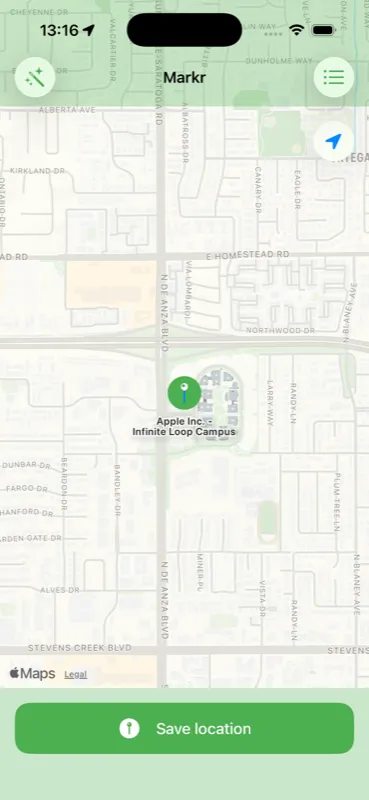
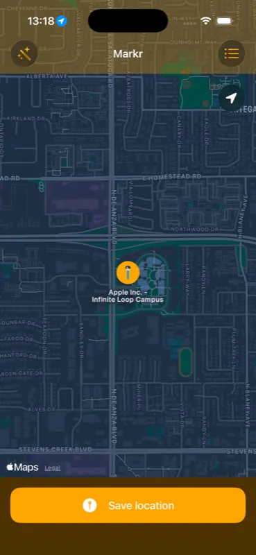

Markr — Save Places
Pin your favorite locations. Add photos, notes and categories. Your personal map — private, portable and always with you.
Features
Quick Save
Save your current location with one tap. Use the home screen widget or Control Center shortcut for even faster access.
Interactive Map
View all saved places on an interactive map. Drag pins to adjust coordinates. Tap to edit details anytime.
Rich Location Data
Add photos, notes, addresses and categories to every location. 24 built-in categories from restaurants to landmarks.
Export & Import
Export your locations as JSON or CSV — including photos. Share via AirDrop, email or import from a backup file.
Trip Planning
Plan trips by searching and organizing locations. Build custom routes and manage multiple trips.
Privacy First
All data stays on your device. No cloud sync, no tracking, no account required. Full data portability via export.
Screenshots


Save Your Places
Available for iPhone and iPad. Supports 8 languages.